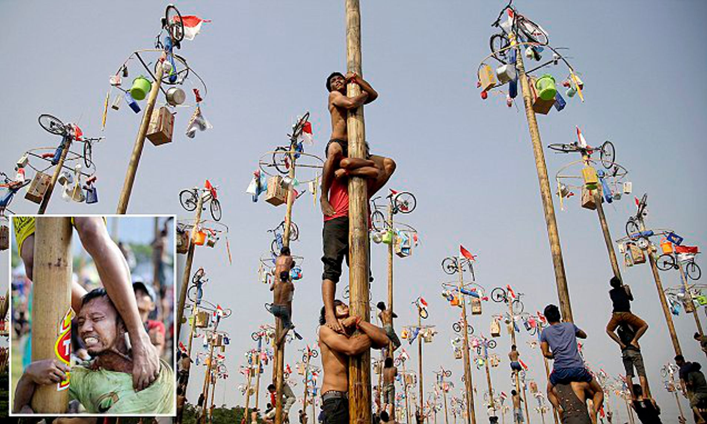

Climbing
Scale the highs of one of the local quarry slabs. Max group size 8. Ages 8+
Abseiling
Take the scary step and abseil from the top of one of the local quarry slabs. There is a lovely view... if you are brave enough to look down! Max group size 8. Ages 8+

Comments